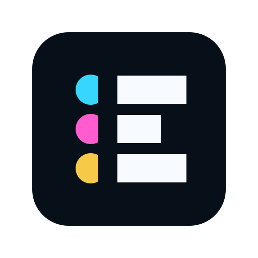
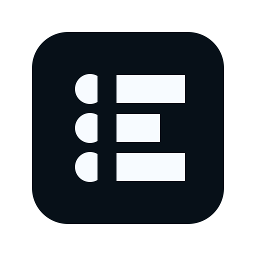
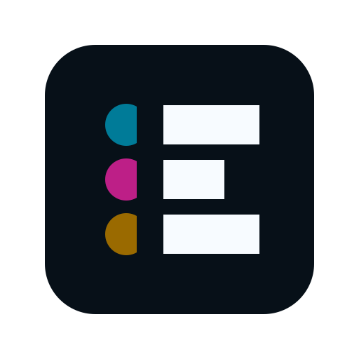
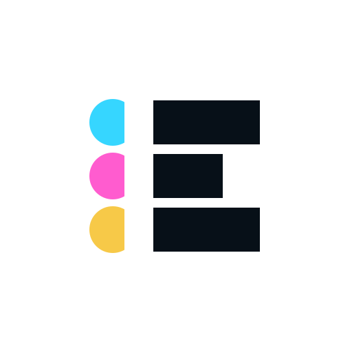
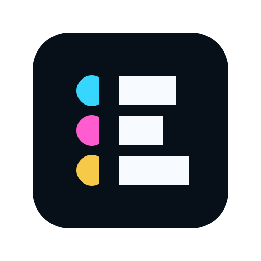
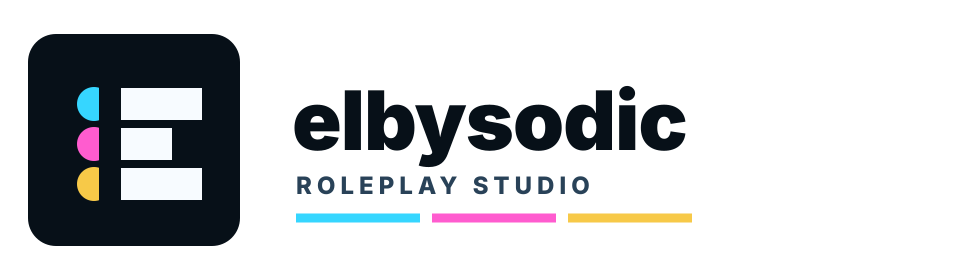
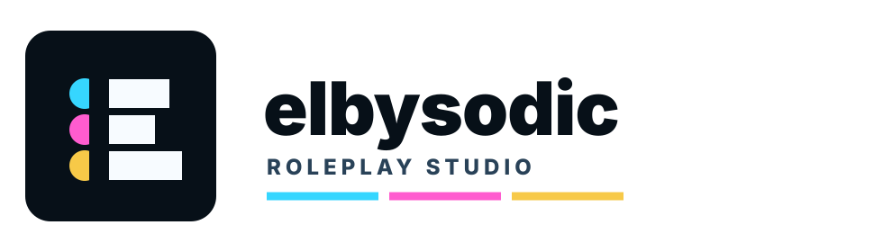

Circle Terminals
The selected direction compresses Elbysodic into a simple symbol: three face/roster terminals plus thread bars arranged as a compact E. It is distinctive, PBP-native, and strong at online sizes.

Why It Works
The mark has a one-glance construction: o --- / o - / o ---. The circles carry face, roster, and public authorship. The bars carry thread, scene, and continuity. The cyan, magenta, and yellow terminals give a Technicolor record system without making the logo decorative.
Brand Logic
Three colored terminals feel like identities in a roster, not generic app dots.
The long-short-long bars preserve the post/thread structure and imply an E.
The black-key container and cut spine make the mark precise and usable in product chrome.
Size Proof
Variants




Primary vs Progressive
Lockup

